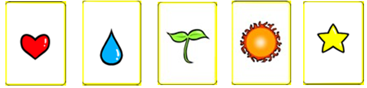
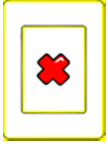
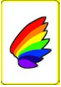
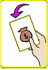

보드게임 '할리갈리'의 기본 규칙을 바탕으로 특수 카드 네 종을 새로 추가했습니다. 변수와 전략 요소를 더한 창작 보드게임 '컬러킬러'를 직접 기획하고 제작했습니다.
원작 할리갈리는 카드를 순차로 공개해 같은 과일이 5개가 되는 순간 종을 먼저 치는 규칙입니다. 순발력 단일 변수로 승패가 갈려 초반 열세를 만회할 수단이 없습니다. 특수 카드 네 종을 추가해 역전 변수를 만든 창작 보드게임이며, 대학 재학 중 3인 팀으로 제작했습니다.
권장 연령 7세 이상
4인 플레이어용
한 판당 10~15분 소요
일반형 카드 25장(하트, 물방울, 새싹, 해, 별)과 특수형 카드 10장을 합쳐 총 35장의 카드로 구성됩니다. 이에 더해 타격용 종 1개와 전용 룰 설명서가 포함됩니다.
일반 카드 구성 (5종)

특수 카드 구성 (4종)



* 상세 기능은 '차별화: 특수 카드' 탭 참조
바닥에 깔린 그림들의 총합이 정확히 5개가 되거나, 조건에 맞는 특수 카드가 나왔을 때 가장 먼저 중앙의 종을 타격합니다.
쳐야 할 타이밍이 아닐 때 종을 잘못 쳤을 경우, 페널티로 나머지 참가자 전원에게 자신의 패를 한 장씩 지불해야 합니다.
손패가 다 떨어지면 패배 처리되며, 최종 생존하거나 획득한 카드가 제일 많은 사람이 우승을 차지합니다.
단순한 순발력 게임을 넘어, 플레이어 간의 치열한 눈치싸움과 역전을 가능하게 만드는 고유한 특수 카드를 도입했습니다.
자신의 차례를 넘기지 않고 연속으로 플레이하여 변수를 창출합니다.
자신의 바로 다음 순서인 사람의 차례를 강제로 스킵하는 방해 카드입니다.
그림 개수 조건과 상관없이 바닥에 깔리는 즉시 1순위로 타격 가능합니다.
더미 고갈 시 타인의 패를 뺏어올 수 있는 강력한 역전 카드입니다.
🔻 문제점 (A4 용지 사용)
초기 프로토타입 단계에서 일반 A4 용지로 카드를 제작했더니, 뒷면이 투과되어 상대방의 패가 보인다는 중대한 지적이 접수되었습니다.
💡 해결 방안
피드백을 즉각 반영하여 실제 시중에 판매되는 보드게임 퀄리티의 두꺼운 전용 용지로 인쇄 방식을 업그레이드하고 게임의 공정성을 확보했습니다.
🔻 문제점 (진행 속도 저하)
원래 기획했던 '투시 능력' 카드가 플레이어들의 장고를 유발해 전체적인 게임 속도가 크게 늘어지는 현상을 플레이 테스트 중 발견했습니다.
💡 해결 방안
게임 진행 속도를 끌어올리기 위해 템포를 늦추는 투시 능력을 삭제하고, 불리한 상황에서도 단번에 역전의 묘미를 줄 수 있는 '약탈 능력'으로 룰을 전면 수정했습니다.
컬러킬러의 실제 플레이 모습과 특수 카드가 만들어내는 다이나믹한 상황을 확인해 보세요!
특수 카드를 넣은 목적은 순발력 단일 변수를 완화하는 것이었습니다. 그 목적이 달성됐는지는 구성 비율로 확인할 수 있습니다.
특수 카드 비율
28.6%
35장 중 10장
1인 초기 패
8.75장
4인 균등 분배
1인당 특수 카드
2.5장
기대값
종당 특수 카드
2.5장
4종 ÷ 10장
해석
한 판 10~15분 동안 플레이어 한 명이 쥐는 특수 카드가 평균 2.5장입니다. 즉 3~5분에 한 번 변수를 낼 기회가 생기는 밀도입니다. 너무 잦으면 순발력 요소가 묻히고, 너무 드물면 역전 수단으로 체감되지 않는데 이 구간은 그 사이에 있습니다.
다만 4종에 10장은 균등 배분이 되지 않습니다. 종당 2.5장이므로 어떤 카드는 2장, 어떤 카드는 3장이 됩니다. 가장 강한 카드에 3장을 배정하면 게임의 성격이 그 카드로 쏠리므로, 약한 카드에 3장, 강한 카드에 2장을 두는 편이 안전합니다. 어느 카드가 강한지는 아래에서 정리했습니다.
각 카드가 누구에게, 어떻게 유리한지를 따라가면 설명만으로는 드러나지 않는 편향이 보입니다.
이 카드는 낸 사람이 거의 확정적으로 이깁니다. 내는 사람은 자기가 무엇을 낼지 미리 알고 손을 종에 올려둘 수 있지만, 다른 플레이어는 카드가 공개된 것을 보고 인지한 뒤에 반응해야 합니다. 이 반응 지연만큼 낸 사람이 앞섭니다.
결과: 순발력 단일 변수를 완화하려 했는데, 이 카드는 순발력 경쟁 자체를 없애는 방향으로 작동합니다. 보완: ① 낸 사람은 타격 불가로 두거나, ② 깔린 다음 턴부터 유효하게 하거나, ③ 낸 사람에게만 짧은 유예를 걸어 다른 사람이 인지할 시간을 줍니다. 셋 중 ②가 가장 단순하고 규칙 설명도 짧습니다.
대상이 항상 바로 다음 사람으로 고정되어 있습니다. 4인 게임에서 좌석은 고정이므로, 블랙 카드를 많이 받은 플레이어의 오른쪽 사람만 반복해서 피해를 봅니다. 실력이나 판단이 아니라 앉은 자리가 승패에 영향을 줍니다.
보완: 대상을 낸 사람이 지정하게 하면 좌석 편향이 사라지고 눈치싸움 요소도 강해집니다. 기획 의도가 ‘방해’였으므로 지정 방식이 의도에 더 맞습니다. 다만 지정은 감정 마찰을 키우므로, 파티 게임 성격을 유지하려면 진행 방향을 반대로 돌리는 방식이 대안이 됩니다.
뺏을 대상을 고를 수 있다면 1위를 치는 것이 항상 합리적입니다. 그러면 선두가 계속 견제당해 승부가 늘어지고, 누가 이길지를 3위가 결정하는 상황이 생깁니다. 승패에 직접 관여하지 않는 플레이어가 결과를 좌우하면 만족도가 떨어집니다.
보완: 대상을 패가 가장 많은 사람으로 강제하면 역전 카드라는 목적은 유지하면서 선택에 따른 마찰이 사라집니다. ‘불리한 사람이 쓰면 강하고 앞선 사람이 쓰면 약한’ 자동 조정 효과도 생깁니다.
네 종 중 부작용이 가장 적습니다. 대상을 특정하지 않고, 타격 우선권을 바꾸지 않으며, 단지 자기 차례를 늘립니다. 패를 빨리 소모하므로 손패가 다 떨어지면 패배인 이 게임에서는 무조건 이득도 아니어서 스스로 균형이 잡힙니다. 배분을 늘려도 안전한 카드이므로 3장 배정 후보로 적합합니다.
테스트 개선안에서 투시 카드를 삭제한 이유는 ‘장고로 템포가 늘어져서’였습니다. 같은 기준을 페널티 룰에 적용하면 문제가 하나 남아 있습니다.
오타격 시 손실
3장
4인 · 전원에게 1장씩
초기 패 대비 손실률
34.3%
8.75장 중 3장
판단 대상
9종
일반 5종 + 특수 4종
한 번의 오판으로 패의 3분의 1을 잃습니다. 원작 할리갈리도 같은 페널티를 쓰지만, 원작은 판단 대상이 과일 5종의 개수 합 하나뿐입니다. 컬러킬러는 여기에 특수 카드 4종의 조건이 더해져 판단 복잡도가 올라갔습니다. 같은 페널티라도 오판 확률이 높아진 만큼 실질적으로 더 무겁게 작동합니다.
예상되는 결과와 보완
페널티가 무거우면 플레이어는 확신이 들 때까지 종을 치지 않습니다. 투시 카드를 삭제해 얻은 템포 개선을 페널티가 다시 상쇄할 수 있습니다.
다음 플레이 테스트에서 세어볼 것
앞의 개선 2건은 ‘투과된다’, ‘늘어진다’처럼 체감으로 잡아낸 문제였습니다. 아래는 세어보면 확인되는 항목입니다.
이 검토의 한계
정리
특수 카드는 순발력 단일 변수를 완화하는 데 성공했지만,
그 대신 낸 사람 우위 · 좌석 편향 · 견제 집중이라는 새로운 변수를 만들었습니다.
변수를 넣으면 편향도 같이 들어옵니다
역전 수단은 누가 유리해지는지를 함께 설계해야 합니다. 대상이 고정된 카드는 좌석이, 대상을 고르는 카드는 견제가 변수가 됩니다.
배분이 밸런스입니다
4종 10장은 균등이 안 되므로 어느 카드에 3장을 주느냐가 게임 성격을 결정합니다. 부작용이 가장 적은 흰색 카드가 3장 후보입니다.
복잡도를 올리면 페널티도 다시 봐야 합니다
판단 대상이 5종에서 9종으로 늘었으므로, 원작과 같은 페널티가 더 무겁게 작동합니다. 템포 개선의 취지와 충돌합니다.